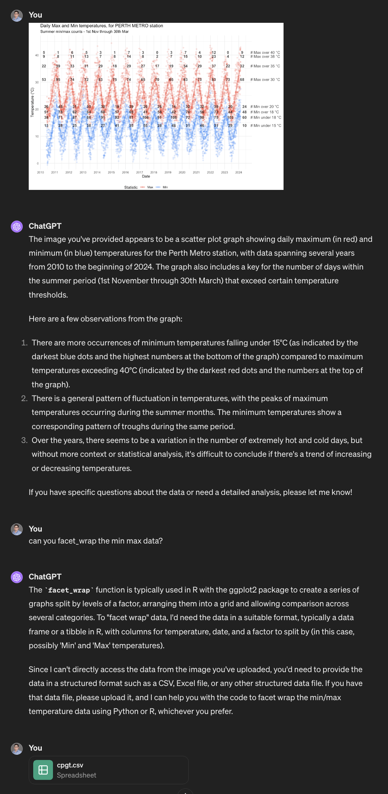

Overview
AI is a hot topic in most fields right now, and biostatistics is no exception! We (the Telethon Kids Institute biostats team) were asked to present at the weekly Institute seminar on the use of AI in statistical workflows.
The term AI has many meanings depending on the context - in this article we are referring exclusively to (and use the term interchangeably with) large language models (LLMs) such as ChatGPT and Claude. These tools are useful not just for writing sentences and paragraphs of text, but also for writing functioning code!
Since first investigating the capabilities of ChatGPT in writing R code, our team has been working to utilise it safely and effectively in our everyday workflows.
The summary of our message to the Institute staff was that we cannot ignore the massive increase in efficiency that AI can bring if used properly. However, we also need to be very aware of its limitations, and the necessary role of human experts in the process of validating any non-trivial output.
This is Part One in a two-part series. This part will look at the capabilities of AI to benefit our workflows and increase efficiency. The next part will look at some limitations of the technology as it currently exists, including some practical recommendations to identify these issues.
Format of this post
We will work through a couple of practical examples of how we might use AI in an everyday workflow:
Data Visualisation
Statistical Analysis
Bonus - Shiny App Development
In these examples, we will increasingly take our hands off the wheel and allow AI (in these examples, ChatGPT 4.0) to perform more and more of the task.
Example 1 - Data Visualisation
A couple of summers ago (2021/22) felt unusually hot in Perth, Australia. Specifically, it seemed that the maximum temperature was regularly exceeding round numbers like 35 or 40 degrees Celsius. The most recent summer was starting to feel similar, but as it relates to ‘hot days’, were we seeing more of these? My colleague, being a statistician, wished to contrast this most recent summer to previous summers.
He whipped up a quick plot using ggplot2, with a focus on the number of ‘summer days’ above a certain maximum (and equally important, ‘hot nights’ that stayed above a certain minimum). Shown below, is data through to mid February 2024:
<img src=“{{site.url}}/images/weather_p1.jpeg>
Here we can see the number of days over a certain maximum for each year since 2010. For example, in 2023, Perth had 0 days above 40°C and only 4 above 38°C.
The sweltering summer in question (2021/22) had a whopping 12 days over 40°C and 23 above 38°C. Since the next highest count since 2010 was 7 and 14 respectively, it’s fair to say this was quite the outlier! And the ‘current’ (at the time) summer was similar to this, but yet to exceed it.
My colleague felt that the data visualisation could probably be cleaner and more clear, so enlisted ChatGPT for help.
Providing the Blueprint
ChatGPT allows the user to provide images as a part of the prompt. With that in mind, the image was uploaded first by itself. ChatGPT was able to successfully identify the key elements of the plot just from the image (!), and so the next step was to give some guidance to make the plot more visually appealing.
With just one prompt: “can you facet wrap the min max data”, in addition to the original plot, it got to work. Once the original data was provided, it returned the requested modifcation - complete with Python code for the plot (R cannot be run within ChatGPT, though we certainly could have requested R code to run ourselves instead).
Here is the entire prompt history, from beginning to end:
- One image
- One command
- Some (undescribed) data
was all the context required to understand and return, approximately, the desired output. We say approximately, since some key information such as the counts above certain levels, is absent from this first attempt.


End Result and Discussion
After some further refinement and back-and-forth, we arrive at a much-improved plot which more closely captures the spirit of the original, while improving the colour scheme and facetting the data.
Plots are a great use-case of AI, since the nitty gritty of colours, panes, text, etc can be a time-consuming hassle to navigate manually. AI in our experience does a good job of translating our descriptive visual prompts into code that achieves the described vision. Furthermore, the output is instantly verifiable (keep this point in mind!) and easy to refine.
Example 2 - Statistical Workflow
The following example was created specifically for our presentation. We wanted to mimic a researcher with a passing understanding in statistics, but no expertise, as they attempt to run through an entire statistical pipeline from design to analysis. This would involve more careful and lengthy prompting than the previous example.
For the example, we downloaded a data set contacting simulated lung data for 8528 individuals. It can be found here:
https://stats.idre.ucla.edu/stat/data/hdp.csv (NOTE clicking the link initiates a download of the data.)
The data has the following variables of interest for our example:
- Outcome
- remission (0/1)
- Patient-level variables
- IL6 levels
- CRP levels
- Length of hospital stay
- Family history
- Cancer stage
- Physician-level variables
- Physician experience
- Physician ID
- Hospital ID
We will be very careful to avoid statistical terminology as we prompt ChatGPT, and we can see that there is an implied nesting structure to our data, with patient inside physician inside hospital. With that in mind, and the fact that our outcome is binary, we are hoping that ChatGPT suggests a hierarchical logistic regression.
Providing the Problem
In this example, we provided ChatGPT with a very high-level summary of our data and research question, as seen here:

Again, we have tried to use prompts that anyone with some familiarity with stats and data analysis would be able to replicate and understand. Here, we simply mention to ChatGPT that there are patients, doctors and hospitals (highlighted above).
The Response
Amazingly, especially if you have had limited exposure to AI, these high-level, lay descriptions of our data and research questions were sufficient for ChatGPT to suggest a mixed-effects logistic regression model. It recognised the binary outcome and the hierarchical structure of the data, and proceeded to provide R code to perform the analysis.

Here is where we encounter a difference from our previous visualisation example, however. For someone unfamiliar with statistics, would they have known if this answer happened to be incorrect? Broadly, this response is on track, but should Doctor be nested within Hospital? (keep this in mind! #2).
For now, we do recognise that it has selected an appropriate model to get started. An impressive feat!
End Result and Discussion
For brevity’s sake, we will not include the whole prompting process here. However, following the model specification, ChatGPT was able to successfully guide us through adding a random slope, and then summarising our model using the broom.mixed package (broom for mixed models, as the name suggests).
It then gave us code to check the model fit, run model diagnostics, and perform sensitivity analysis. At each stage, it was able to give advice on interpretation and next steps that we could not fault. Here are some highlights:

Bonus Example - Data Anonymising App
One thing that the first example might make you think is, “Great! I’m going to make all my graphs online”. Slow down!
The data uploaded as part of that example is public data, freely available from the Australia Bureau of Meteorology website. There are a lot of AI based websites that will draw a graph for you if you provide them data to do so - there are some where that is all they do.
However. For most researchers, particularly in the health research space, you will not have approval (ethics and/or governance) to upload your data to random websites.
So, we created an app that will transform your data into a reduced, fully-anonymised dataset that can then be used in online AI tools for assistance with coding up figures or structuring models. This is not just anonymised in the sense of the masking/removing the identifiable data - all values in the dataset are replaced, with data regenerated, and category and variable labels stripped off.
It looks like this:

Why?
Well yes, you could just use random data between 0 and 1 - but we (and we presume a lot of people) find less mental load involved when the data being worked with resembles the original data (as in, the values are between 140 and 200 for our “blood pressure” histogram, or between 70 and 130 for the “IQ scores” we’re plotting against values between 1.4m-2.1m for “height” etc).
How do I access it?
It would be ironic if we provided this for you on our website, because then you would be sending your data to our servers. At our Institute, we run this on an internal server that is not accessible from outside our internal network.
You can download a copy from our github (it is a Shiny app that runs within R), and then run it locally on the desktop (or virtual) machine you are working on - anonymising your data without it leaving your analysis environment!
Anything else?
Outside of adding the instructional blurb and some minor aesthetic tweaks, this entire app was written by ChatGPT. ChatGPT made the code available for download (as a zip file) and worked through a series of prompts (after the initial prompt) to make small tweaks to get the app doing exactly what we wanted.
We then thoroughly inspected the code (knowing roughly how it should have been written/structured) and tested it with a range of test datasets.
There is a test dataset (.xlsx) available for download here (click downward arrow on right hand size of the page) alongside the app.
How was that created? You guessed it!

End Result and Discussion
In this, Part One, we have seen how easy to use and powerful AI can be in the area of data analysis and statistical workflows.
In Part Two, we will look at some pitfalls of AI and some traps we can fall into. We’ll see if we can determine some good rules-of-thumb for its use to ensure our AI-assisted work remains both efficient and accurate.